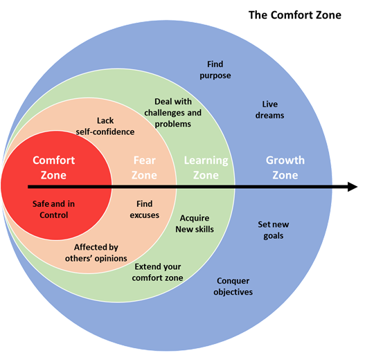

Último post del año y en esta ocasión quería que fuera un post más personal y compartir con vosotros una reflexión que me ha ayudado mucho a poder afrontar este año de cambios con otra perspectiva.
Finalmente me animé a cambiar de empresa, pero no me quedé ahí, así que para complicarlo un poco más decidí aceptar al mismo tiempo un cambio de rol.
No me canso de repetir que fuera de la zona de confort es donde sucede la magia, así que me tomé este cambio como una oportunidad para extender mi zona de confort, enfrentando nuevos desafíos y desarrollando nuevos skills.
Ha sido un año de mucho aprendizaje pero no exento de grandes desafíos.

Como os digo han sido muchos y muy diversos los desafíos a los que me he enfrentado durante todo el año, pero ha habido uno en especial que ha estado ahí de forma recurrente llamando a mi puerta, la sensación de no llegar a todo lo que quería o tenía planteado como objetivo.
Cuando decidí aceptar el nuevo rol, sabía que no sería un año fácil. Un nuevo rol, por lo general requiere nuevos skills, skills que necesitan de tiempo para su aprendizaje y desarrollo (En otro post ya os aburriré sobre el modelo de Dreyfus en la adquisición de competencias).
Una de la primeras cosas a las que me enfrenté una vez firmado el contrato fue el conocido por muchos, síndrome del impostor, ¿De verdad estoy preparado para este nuevo rol? ¿Estaré a la altura de lo que se espera de mí?
Creo que siempre habrá momentos en la vida donde asomará el temido síndrome del impostor, pero frente a estas situaciones siempre cabe enfrentarse a él con una mentalidad de crecimiento o growth mindset (ya comentaremos más sobre esto en otro post). La personas con un growth mindset son aquellas que creen que cualquier habilidad se puede desarrollar con dedicación y trabajo duro, es decir nuestro talento solo sería el punto de partida.
Además de mi nuevo compañero de viaje, está el nivel de autoexigencia que me autoimpongo en cada cosa que hago. Ante ésta nueva situación, no quería defraudar a nadie, empezando por mí mismo, de modo que por no decepcionar a nadie y cumplir con la expectativas que me había autoimpuesto ha sido un año de asumir muchos retos, de no saber decir NO, de llenar la mochila hasta el límite de no ser capaz de avanzar.
Todo esto me llevó a parar y repensar la estrategia, aquí tengo que dar las gracias a mi jefe que supo ayudarme a abrir lo ojos y a hacer la siguiente reflexión:
¿Por qué tengo la sensación de no parar, pero no me siento productivo?
Productivo vs Ocupado
¿Tienes una pila de tareas que no para de crecer? ¿Un inbox que necesita de otra vida para responder todos esos email? ¿Vives con la sensación de que vas siempre a remolque y te faltan horas en el día? ¿Tienes la sensación de estar haciendo muchas cosas, pero no conseguir nada?
Quizás y solo quizás estás muy ocupado, pero no acabas siendo productivo.
Insisto en el quizás porque la falta de tiempo en muchos casos está relacionada con las expectativas que nosotros mismo nos marcamos de lo que deberíamos ser capaces de hacer a lo largo del día.
En un mundo conectado es muy fácil estar ocupado, pero no ser productivo.
Busy people work hard. Productive people work hard and work smart.
Estar ocupado es trabajar con ansiedad, mientras que ser productivo es trabajar con foco.
Estar ocupado en muchos casos está alimentado por el perfeccionismo, mientras que ser productivo está alimentado por un propósito claro.
Estar ocupado es querer ser bueno en todo, mientras que ser productivo es ser excelente en las cosas que importan.
Cuando entiendes que menos es más, estás en el camino para dejar de estar ocupado y empezar a ser productivo.
¿Cómo saber si estoy demasiado ocupado?
Como os comentaba, ser productivo es entender que menos es más, de modo que podemos decir que la gente ocupada sería aquella que:
- Dice a todo que SI:
- Cada vez que decimos SI, estamos limitando nuestro tiempo para dedicarlo a otras cosas.
- Decir que SI a las cosas equivocadas, por muy pequeñas que éstas sean, nos acabarán llevando por el camino equivocado
- Por el contrario decir NO, es una herramientas para salvaguardar un recurso limitado como el tiempo, para poder usarlo en lo importante.
- Atiende cada tarea o necesidad según presenta:
- La gente ocupada nunca tiene tiempo para nada, siempre hay una razón para ir acumlando todas esas tareas que aparecen lo que le inhabilitan para poder siquiera pensar en cómo dejar de estar ocupado.
- La gente ocupada es aquella que no tiene control sobre su agenda o lista de TO-DOs, y deja que otra gente le llene la agenda o desborde su pila de tareas. Si pierdes el control sobre tu agenda, aunque la liberes, siempre acabará completa poco después.
- Intenta hacerlo todo por ella misma:
- Dicen que si quieres llegar rápido camina solo, si quieres llegar lejos camina acompañado. Las personas ocupadas por lo general tiene problemas a la hora de delegar.
¿Cómo dejar de estar ocupado y empezar a ser productivo?
Hay una creencia últimamente que nos lleva a pensar que si no somos capaces de hacer más somos unos perdedores. De modo que intentamos asumir más y más responsabilidades, llenando nuestro To-Do list de tareas hasta el punto que deja de tener sentido.
Una vez en ese punto, nos sentimos más exhaustos y menos realizados intentando estar al día con un lista de tareas que nunca para de crecer, afectando a nuestra vida laboral e incluso a nuestra vida social.
Y el problema se agrava cuando en la mayoría de los casos creemos que la solución es invertir más tiempo. No acabamos de recibir los frutos de ésta inversión y podemos llegar a un punto de difícil retorno y acabar muy frustrados y quemados.
Como en la mayoría de los problemas, la solución empieza por asumir que tenemos un problema y empezar a hacernos preguntas del tipo:
- ¿Cúal son las tareas en las que estoy trabajando? ¿Son todas éstas tareas necesarias?
- ¿Hay alguna forma de hacer mi trabajo de manera más eficiente?
- ¿Cómo puedo eliminar todas esas tareas que no aportan valor?
- ¿Puedo poner el foco en la tareas que me hacen sentir más feliz y realizado?
Algunos de los cambios que podemos hacer para ayudarnos a dejar de estar siempre ocupados y empezar a sentirnos productivos:
- Aprende a decir NO. Cada tarea que se te presenta es una oportunidad para evaluar la necesidad e importancia de esa tarea.
- Prioriza. Identifica qué tareas son realmente importantes.
- Create una agenda con la tareas importantes y reserva tiempo para tí, tiempo para analizar si estás haciendo lo que realmente es importante.
- Reserva tiempo en tu agenda para descansar, como si se tratara de una tarea más, tenemos que tomar conciencia de lo importante que es el descanso y como impacta en nuestra productividad.
- Aprende a delegar. Te ayudurá a encontrar tiempo para otras tareas y ganarte la confianza de la gente con la que trabajas.
- Trabaja de forma profunda conocido como “Deep work”. Si te interesa el tema te dejo por aquí el link al libro de Cal Newport.
- Evita los cambios de contexto y el multitasking, para ello tienes que trabajar de forma activa en tu agenda, siendo dueño de tu tiempo.
Como hemos visto, dejar de estar ocupado y empezar a ser productivo no está relacionado con la gestión del tiempo. Ser productivo significa maximizar el trabajo que es realmente importante evitando añadir esas tareas que nos mantienen ocupados pero que no son prioritarias.
Muchas veces nuestra productividad se juzga por lo que hacemos y no por lo que conseguimos, esto en ocasiones nos llevar a caer en la trampa de hacer muchas cosas pero no aportar valor real.
RECUERDA: Cada vez que dices que estás ocupado realmente estás diciendo que no puedes priorizar tu vida. Toma el control de tu vida y deja de estar ocupado.
Como siempre gracias por leerme y llegar hasta aquí. Si te ha servido de algo por favor compártelo para que le pueda llegar a más gente.
Bibliografía:
- https://zenhabits.net/enough-time/
- https://personalexcellence.co/blog/busy-productive/
- https://personalexcellence.co/blog/80-20-part-2/
- https://medium.com/@spencerideas/the-difference-between-busy-and-productive
- https://medium.com/swlh/whats-the-point-of-productivity
- https://medium.com/personal-growth/to-be-consistently-productive-strengthen-your-skill-in-attention-management
- https://www.inc.com/larry-kim/the-differences-between-busy-productive-people